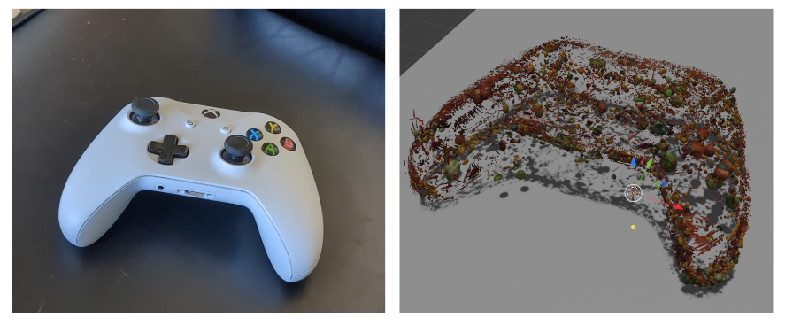

Semantically-similar Outputs
Even after Veggification, outputs are still semantically similar to the original scene! In our human evaluations, we've observed that the original scene is correctly identified most of the time.
We present Veggie World, a method for rasterizing 3D scenes using any set of 3D assets, in our case, vegetables. Veggie World builds off Nerfstudio's Gaussian Splatting library to Veggify 3D reconstructions through our Veggie Regularization techniques during training, and render our Veggie Worlds using Blender without the need for diffusion or other neural-based extensions. In addition to visually pleasing Veggified renders of real-world scenes, Veggie World also poses an interesting research question on the importance of texture and 3D structure in image classification. Please refer to the paper PDF for more technical details.
Even after Veggification, outputs are still semantically similar to the original scene! In our human evaluations, we've observed that the original scene is correctly identified most of the time.
Veggies can model high-frequency features in natural scenes! Here, Veggie World optimizes Gaussians into carrots and sweet peppers due to their shape. In this scene, the thin, flat sides of the bowl are modeled with an abundance of carrots and sweet peppers to accurately capture the high-frequency features.
Top: garlic results without Veggie dropout. We see that carrots and sweet peppers dominate with over 70,000 and 50,000 occurances respectively. We attribute this to the many high-frequency features needed to model the edges of the garlic bulb, resulting in many Gaussians transforming to these vegetables during training. Bottom: results with a Veggie dropout ratio of $\frac{1}{6}$. Upon applying Veggie dropout, carrots and sweet peppers no longer dominate the distribution of vegetables and the distribution of vegetable counts becomes less more uniform. The diverse distribution of vegetables yields object surfaces that are more covered/dense, as the small high-frequency carrots and sweet-peppers no longer dominate the distribution, allowing other larger vegetables to populate the scene. Note: we felt that the peach asset was distorted and manually opt to exclude peaches from our Veggified outputs.
@article{veggieworld2024,
author = {Mathur, Rohan and Tabrizi, Ryan},
title = {Veggie World},
journal = {arXiv},
year = {2024},
}